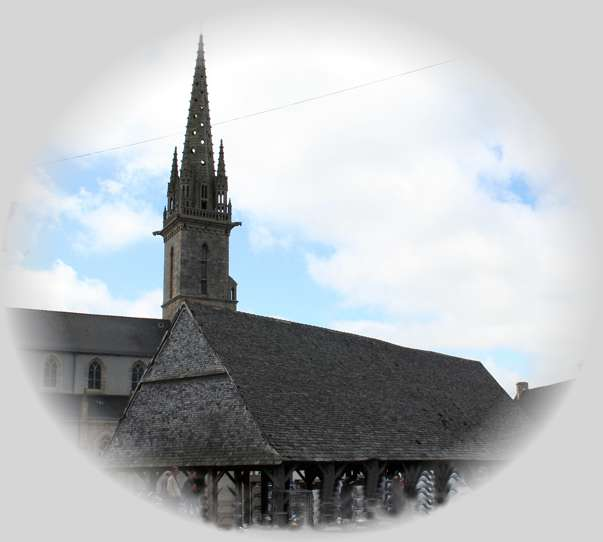
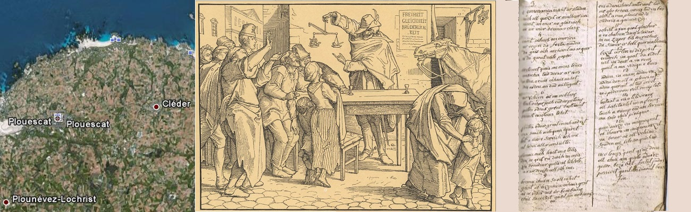

Retour aux "Chouans" du "Barzhaz Breizh"
Taolenn

|
A propos de la mélodie Selon l'indication des manuscrits de Penguern et de J. Cueff [3], cette pièce se chante: "War ton "An den yaouank hag ar marv" (Sur l'air du "Jeune homme et la mort") Il est remplacé ici par l'air du Barzhaz Breizh "Ar c'hakous" (le lépreux) A propos du texte - recueilli par Jean-Marie de Penguern (1807 - 1856), dans le manuscrit coté N.90 à la Bibliothèque Nationale : "Chants populaires de Trégor", folios 131-136 - transcrit par Joseph Ollivier ( Ms 975, p. 294-296, chant n° 160). - publié par Dastum dans "Dastumad Penwern" en 1983, page 59. - Auparavant, il avait été publié par Pierre Le Roux dans les " Annales de Bretagne [et des Pays de LOuest], 1886-[en cours], pour les années 1908-1909 - Tome 24, p. 164-169 - consignée sur le manuscrit de Jacques Cueff, datant de 1790 - 1792, - publiée par le Chanoine Pérennès dans les Annales de Bretagne 1936 -1937, tome 43, pp 485-491. - puis dans ses " Poésies et chansons populaires bretonnes concernant des événements politiques et religieux de la Révolution française, 1937", Tome I, p. 322-329 |
 Mélodie Arrangement par Christian Souchon (c) 2009 |
About the melody Following a hint in the De Penguern and J. Cueff MS [3], this piece is sung: "War ton" An den yaouank hag ar marv " (To the tune of "The Young man and Death") It is replaced here by the Barzhaz Breizh tune "Ar c'hakous" (The Leper) About the text - collected by Jean-Marie de Penguern (1807 - 1856), in the manuscript entered under at the Bibliothèque Nationale Archives "Chants populaires de Trégor", under number N90, folios 131-136 - transcribed by Joseph Ollivier (Ms 975, p. 294 - 296, song n° 160). - published by Dastum in "Dastumad Penwern" in 1983, page 59. - Previously, it had been published by Pierre Le Roux in the "Annales de Bretagne [et des Pays de LOuest], 1886- [in progress], for the years 1908-1909 - Volume 24, p. 164 - 169 - recorded in the manuscript of Jacques Cueff , dating from 1790 - 1792, - published by Chanoine Pérennès in the "Annales de Bretagne 1936 -1937", volume 43, pp 485-491. - then in his "Poetry and popular Breton songs on political and religious events of the French Revolution, 1937", Volume I, p. 322-329. |
|
KANTIK 1. Va broiz, me zo pell diouzhoch (1) Evit va Doue hag evidoch Evid va Roue, ar veleien Hag hor lezennoù ançien. 2. Kent chwi veve en abondance, Er blijadur hag er bombance. Bremañ leun a velankouni Chwi ho-peus chagrin hag ennui. 3. E commencement ar Stadoù Ez och kouezhet er maleurioù Nemet an enor ne glaskach Hag an enor bremañ ho kloaz. [2] 4. Kavet ho-peus an enorioù Ar voyen da foetañ ho madoù Da gas hoch archant eus ar gêr Ha da gaout evitañ paper. 5. Bretoned keizh me m-eus truezh Ouzhoch tud diwar ar maes. Ho Toue, ho Roue ho-peus nachet Dre harzoù an dud milliget. 6. Ar veleien hag an noblañs, Tout o charjaj out ar potañs, Petra o-deus graet, Bretoned, Nemet techet eus ho touez? 7. Petra o-deus graet en hoch andret Ma 'z oach outo ken egaret? Lod a oa e servich hoch ene Ha lod-all ho "koñsulte". [3] 8. Bremañ och lezet en ho tivis Den ne gred reiñ deoch un avis. Va breudeur keizh, al "liberté" [4] A rayo deoch koll hoch ene. 9. Bremañ chwi a zo holl nechet Gant al lezennoù (a zo) ho-peus graet Hag er vizer eus ar bombance Chwi zo kouezhet gant an noblañs. 10. Eus-a zaou chant hanter kant lev Me glev bremañ mouezh tud va bro Klevout a ran Ploueskadiz, Klederiz ha Gwineveziz. 11. Ho klevout a ran gant glachar Ha va chalon din a lavar: - En-em zispos, bez kourajuz Da sikour ar bobl ker maleürus! - 12. Bezit certain eo disposet Va gwad evidoch da redek, 'Vit va Doue ha va Roue, 'Keit ha ma vezin e buhez. 13. Adieu, va mamm, adieu va zad! Adieu, dan holl a Bloueskat! Adieu, kerent ha tud devot! En ho pedennoù roit deomp lod! 14. Tostaat a ra ho tilivrañs. Holl habitanted eus-a Frañs Touch a reomp out an termen Ma rayo e-leizh pinijenn. 15. Ken a vezo, va mignoned Va choar ha va mignonezed, Va breur hag an holl veleien: Souden me yelo dho kichen. 16. En ho touez gant gras Doue Holl chwi am gwelo adarre Goude bezañ foetet Judaz. Posedet gant an Diaoul bras. Diskrivet e KLT gant Christian Souchon |
CANTIQUE 1. Amis, si je suis loin de tous, [1] Cest pour notre Dieu,. Cest pour vous. Car je veux défendre mon roi, Les prêtres, nos anciennes lois. 2. Vous qui viviez dans labondance, Voici que plaisirs et bombance, Font place à la mélancolie Au chagrin et aux avanies. 3. Du temps des Etats généraux, Lorigine de tous vos maux, Vous vouliez qu'on vous considère. Et vous l'êtes. La belle affaire! [2] 4. Être considéré nest rien Dès lors qu'on gaspille vos biens, Et que l'or que l'on amassa Se change en piètres assignats 5. Pauvres Bretons, quelle pitié! Les campagnes que vous peuplez. Renient leur Dieu, renient leur roi, Egarés par des rénégats. 6. Les prêtres, les nobles de France Que vous vouez à la potence, Que pouvaient-ils faire de mieux Que s'enfuir vers d'autres cieux? 7. Que vous avaient-ils fait vraiment Qui vaille tant d'égarements, Les uns à vos âmes dévoués, Les autres à vos intérêts? [3] 8. Vous voici livrés à vous-mêmes. Sans nul conseil qui vous soutienne: Mes frères cette "liberté" [4] Peut faire de vous des damnés. 9. Vous fites des lois scélérates Vous traitant en aristocrates: La misère après lopulence; Nobles ou pas, la déchéance! 10. Même à deux cent cinquante lieues D'ici jentends les voix de ceux Qui dans mon pays sont restés: Plouescat, Cléder, Plounevez 11. Jentends ces voix dans laffliction. Mon cur, rempli de dévotion, Sapprête, contre qui toppresse, A t'aider, mon peuple en détresse 12. Je verserai pour toi, sans doute Mon sang jusquà lultime goutte Et pour mon Dieu, et pour mon Roi Jusquau dernier jour qui méchoit. 13. Salut mon père et vous ma mère! Pensez à moi dans vos prières! Salut, peuple de Plouescat! Pieux amis, priez pour moi! 14. Elle vient votre délivrance! Vous tous, habitants de la France! Car nous touchons au but, je pense. Bien des gens feront pénitence 15. C'est alors que, peuple chéri Ma sur, mes amies de jadis Mon frère ainsi que tous les prêtres Vous me verrez soudain paraître. 16. Parmi vous, grâce à notre Dieu. Vous me verrez au jour heureux. Où, terrassé (fouetté), Judas enfin Rejoindra l'antre du Malin. Traduction Christian Souchon (c) 2009 |
HYMN 1. Fellow countrymen, far away (1) For my God, for your sake I stay For all those whose fate is so raw, For the King and our ancient Law. 2. You who used to live in plenty, Whose joys and goods were so many, Are now melancholy and sad: Your fate has turned to be so bad! 3. The States General have caused you Cruel experiences to go through. Acknowlegment was your chief aim. Now you are injured by your claim. [2] 4. Acknowledgment you had! Galore! But bitter poverty far more: Money was removed from your home You got for it paper and foam! 5. My fellow Bretons, what a shame To see what happened with your claim: You were misled from God and King By miscreants. A dreadful thing! 6. Priests or nobles, round your necks The rabble want their ropes to check, What did you expect us to do, Bretons? We fled away from you! 7. What had we done to you to make You act against us so badly? The priests had prayed for your souls' sake, The nobles advised you fairly. [3] 8. And now for yourselves you must shift. No advice how your yoke to lift. Brothers, you have the "liberty"[4] To be damned in eternity! 9. Your innermost being is denied By the laws that they have devised. Whether you are wealthy or poor, They treat you like nobles, for sure. 10. Though two hundred and fifty miles Away from you I hear the cries You give in Plouescat, yonder, In Plounevez and in Cleder. 11. I listened to your sad voices And my straightforward heart chooses: To brace itself for the last strife So as to ease your painful life. 12. You all may be sure that my blood From my veins I'll drain in a flood, For you, for my God, for my King, As long as life sustains my being. 13. Farewell, my mother, my father, Folks of Plouescat, my brothers. Who have chosen pious to be, In your prayers remember me! 14. Your deliverance is on the way. People of France, to end this fray The end of the way is in sight. Penance will be done, far and wide 15. To hasten the moment, my dear Sister and your friends, when you cheer, My dear brother and all the priests On seeing me back home for the feast. 16. I shall celebrate in your midst. It won't be a wraith that you kissed! When Judas at last has been scourged And given in Hell his reward. Translated by Christian Souchon (c) 2009 |

|
[1] Loin de vous: A en juger par la distance qui le sépare du Léon (250 lieues soit au moins 1000 kilomètres, str.10), l'auteur du chant est peut-être réfugié en Espagne (selon l'hypothèse formulée en note par le chanoine Pérennès). Ce texte a certainement été rédigé par un prêtre [2] Les Etats: Allusion aux "Cahiers de doléances" qui furent soumis au roi par les députés des trois Etats (clergé, noblesse et "Tiers état", bourgeoisie et paysans, dont la principale doléance était l'abolition des privilèges fiscaux dont jouissaient les deux autres) en 1789. Les 2 derniers vers de cette strophe signifient mot à mot: "Vous ne demandiez que de la considération (de l'honneur) et cette considération maintenant vous afflige (blesse)". [3] Consulte: Le dernier vers de la strophe 7, définit le rôle social remplit par la noblesse. "Ha lod-all ho koñsulte". Pierre Le Roux (1874-1975), professeur de celtique à l'Université de Rennes avait traduit: "Ils vous conseillaient". Cette formule est reprise par le chanoine Pérennès. Les dictionnaires bretons traduisent habituellement "conseiller" par "kuzuliañ" ou "aliañ". Mais pour rendre le français "consulter", le dictionnaire Favereau propose, outre l'expression normale "klask/goulenn kuzul digant unan bennak" (chercher/demander conseil auprès de quelqu'un), un "konsultiñ unan bennak" tout à fait suspect ("unan bennak" = "quelqu'un", complément d'objet direct du verbe). Le français "consulter" peut avoir le sens de "donner des conseils ou des consultations", mais il n'est alors jamais suivi d'un complément d'objet: "Maître X, avocat, consulte tous les jours". Si bien que "Ho koñsulte" est une impropriété de langage, tout comme le serait "Ils vous consultaient", son équivalent littéral français. L'incapacité de l'auteur de trouver le mot juste pour définir le rôle social rempli par la noblesse en dit long sur la sclérose de l'organisation sociale en cette fin de 18ème siècle. Cette remarque peut expliquer les événements qui allaient suivre, à défaut d'en justifier tous les aspects. [4] Liberté: Le "breton de curé" fourmille traditionnellement de mots français dans le domaine de la religion. S'y ajoutent ici des termes nouveaux, dans celui de la politique. Bien que le mot "liberté" existe dans le dictionnaire du Père Grégoire (1732), on peut supposer qu'à la strophe 8, il faille le prononcer à la française et non à la bretonne comme indiqué dans ledit ouvrage: "libertez", synonyme de "frankiz" ou "galloud". Le mot et le concept qu'il recouvre dans les sphères politiques parisiennes sont étrangers à l'univers mental de l'auteur et méritent à l'évidence les "guillemets" que nous avons ajoutés. On notera la proximité idéologique de ce chant avec les 6 gravures qui composent la "Danse macabre de 1848" du graveur sur bois allemand Alfred Rethel (1816-1859). Ce chef d'oeuvre de propagande réactionnaire, s'en prend, avec quel talent!, aux idéaux "funestes" de la révolution française. La mort sera la sanction des illusions égalitaristes et libertaires, elle leurre le peuple en lui laissant croire que dans les plateaux de la balance qu'elle tient par l'aiguille, la pipe en terre du peuple pèse aussi lourd que la couronne. Derrière elle sur le mur sont placardés les trois mots "liberté, égalité, fraternité". (Cf illustration ci dessus). [5] Date de la gwerz: On peut suggérer que cette gwerz a été écrite fin 1790, début 1791. Le papier monnaie sous forme d'assignats a été imposé le 17 avril 1790. Il n'est pas question des déboires de la famille royale. Nous sommes donc avant le 21 juin 1791, date de l'arrestation du roi à Varennes. Si le prêtre qui composa ce "Cantique" a fui au loin (str.1 et 10), c'est que la constitution civile du clergé du 12 juillet 1790 a déjà été condamnée par le Pape Pie VI (23 juillet 1790, puis 13 avril 1791). Enfin le site "tob.kan.bzh" date le manuscrit de Jacques Cueff communiqué au chanoine Pérennès par lAbbé Perrot. de 1790-1792 (sans doute après un examen minutieux des 15 chants qui y figurent). [6] M. Le Borgne: Le présent chant figure sur le site "ton.kan.bzh" (Clasiification Malrieu) sous le N° M00101. (https://tob.kan.bzh/chant-00101.html). Ce site suggère - à propos de ce chant M-00101 "Kantik: Va broiz me zo pell diouzhoc'h" - et à propos du suivant, M-00117 "Skrapadenn person Plabenneg", "L'enlèvement du recteur de Plabennec", que ces deux pièces ont été composées par le vicaire de Cléder, M. Le Borgne: "Note: composée par M. Le Borgne", Dans le manuscrit De Penguern, on lit à la suite d'un chant précédent d'inspiration similaire ("Ar veleien divroet", "Les prêtres exilés", M-00116): "Fait par M. Le Borgne, vicaire de Cléder. Copié sur un manuscrit , appartenant à son neveu Pierre Le Borgne". En réalité, que cet ecclésiastique ait aussi composé les deux premiers chants est seulement une hypothèse, parfaitement plausible au demeurant, mais qui n'est ni envisagée, ni confirmée par aucun des auteurs cités ci-avant. |
[1] Far from you: Judging by the distance from Leon shire given by the poem (250 leagues, i.e. at least a thousand kilometers), the author of the song could be staying in Spain (a hypothesis set forth by Canon Pérennès in a note). This text was very likely written by a priest. [2] The Estates: This alludes to the "Lists of hopes and grievances" (Cahiers de doléances) that were submitted to the monarch by the deputies of the three Estates (clergy, nobility and the "Third Estate", ie the bourgeoisie and the peasants, whose main claim was abolishing the financial privileges enjoyed by the other two) in 1789. The last 2 lines of this stanza mean word for word: "You only asked for consideration (honour) and this consideration now afflicts (hurts) you". [3] Consulte: The last line of stanza 7, defines the social role fulfilled by the nobility. "Ha lod-all ho koñsulte". Pierre Le Roux (1874-1975), professor of Celtic at the University of Rennes translated it as: "They advised you". This formula is also taken up by Canon Pérennès. Breton dictionaries usually translate "to advise" as "kuzuliañ" or "aliañ". But to render the French verb "consulter", the Favereau dictionary proposes, in addition to the normal expression "klask / goulenn kuzul digant unan bennak" (to seek advice from someone), "konsultiñ unan bennak", which sounds quite suspect ("unan bennak" = "someone", direct object of the verb). The French "consulter" can have the meaning of "to give advice or consultations", but it is never followed by an additional direct object: "Maître X, lawyer, consults every day". The inferrence is that "Ho koñsulte is an impropriety of language, as would be "They would consult you", its literal French equivalent. The author's inability to find the right word to define the social role fulfilled by the nobility speaks volumes about the sclerosis of social organization at the end of the 18th century. This remark may explain the events (Revolution) that were to follow, even if it does not justify everything in them. [4] Liberty: The "Breton language spoken by the clergy" is traditionally teeming with French words relating to religion. New terms are added here, which relate to politics. Although the word "liberté" exists in the dictionary of Father Grégoire (1732), we can suppose that in stanza 8, it should be pronounced in the French way and not in the Breton way as stated in said work: "libertez", synonymous with "frankiz" or "galloud". The word and the concept as understood in Parisian political spheres are foreign to the author's mental universe and obviously fully deserve the "quotes" that we have added. Note the ideological proximity of this song with the 6 engravings that make up the "Auch ein Totentanz in 1848" series by the German woodcutter Alfred Rethel (1816-1859). This masterpiece of reactionary propaganda, attacks,albeit with overwhelming talent, the "disastrous" ideals of the French revolution. Death will put an end to all egalitarian and libertarian illusions it spread, Death lures the people by letting them believe that in the scales it proffers - but it holds it by the needle -, the people's earthen pipe weighs as much as the king's crown. Behind it on the wall are plastered the three words "liberty, equality, fraternity". (See illustration above). [5] Date of the gwerz : One can suggest that this gwerz was written in late 1790, or early 1791. Paper money in the form of assignats was imposed on April 17, 1790. There is no question of the setbacks undergone by the royal family. The time is, therefore, before June 21, 1791, the date of the king's arrest in Varennes. If the priest who composed this "Canticle" fled far away (str.1 and 10), it is because the Civil Constitution of the Clergy of July 12, 1790 had already been condemned by Pope Pius VI (July 23, 1790, then 13 April 1791). In addition, the site "tob.kan.bzh" dates the manuscript of Jacques Cueff communicated to Canon Pérennès by Abbé Perrot. from 1790-1792 (probably after a careful examination of the 15 songs recorded in it). [6] Mr. Le Borgne: This song appears on the site "ton.kan.bzh" (Malrieu classification) under the number M00101. (https://tob.kan.bzh/chant-00101.html). This site suggests - that the present song M-00101 "Kantik: Va broiz me zo pell diouzhoc'h" - and on the following in the De Penguern MS, M-00117 "Skrapadenn person Plabenneg", "The kidnapping of the rector of Plabennec" , were both composed by the vicar of Cléder, Mr. Le Borgne: "Note: composed by Mr. Le Borgne", In the De Penguern manuscript, one reads following a previous song of similar inspiration ( "Ar veleien divroet", "The exiled priests", M-00116 ): "Made by M. Le Borgne, vicar of Cléder. Copied from a manuscript, belonging to his nephew Pierre Le Borgne". In facr, that this clergyman also composed the first two songs is only a hypothesis, albeit perfectly plausible, which is neither considered nor confirmed by any of the authors quoted above. |